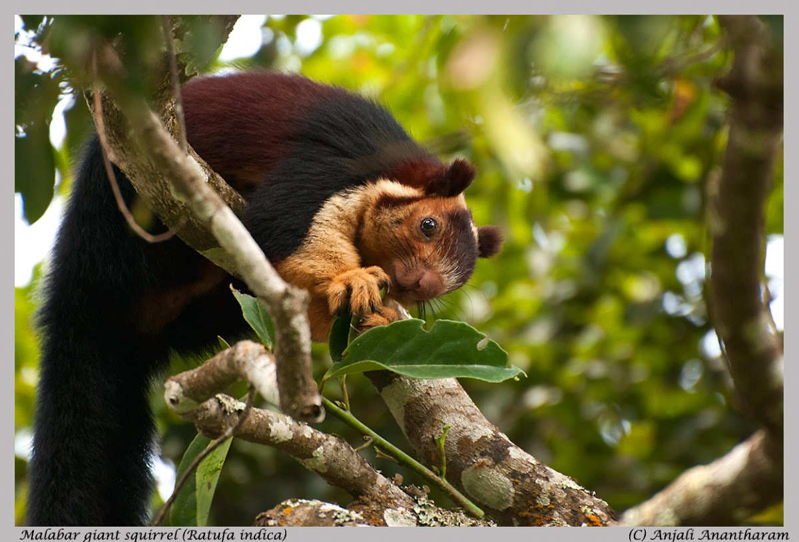
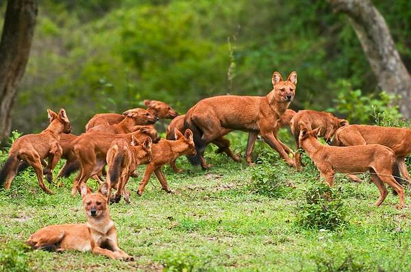
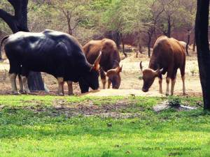

|  |
INDIAN GAINT SQUIRRELThe Indian giant squirrel, or Malabar giant squirrel, is a large tree squirrel species native to India. It is called ‘Shekru’ in Marathi and is a state animal of Maharashtra. It is herbivorous,arboreal and diurnal squirrel found in South Asia. The Malabar Giant Squirrel has a conspicuous two-toned (and sometimes three-toned) color scheme. The colors involved can be creamy-biege, buff, tan, rust, brown, or even a dark seal brown. The underparts and the front legs are usually cream colored, the head can be brown, however there is a distinctive white spot between the ears.Adult head and body length varies around 14 inches (36 cm) and the tail length is approximately 2 ft (0.61 m). Adult weight – 2 kg (4.41 lb). |
|  |
ASIATIC WILD DOGThe dhole is also called the Asiatic wild dog or Indian wild dog, is a species native to South and Southeast Asia. The dholes are classed as endangered by the IUCN, due to ongoing habitat loss, depletion of its prey base, competition from other predators, persecution and possibly diseases from domestic and feral dogs.The dhole is a highly social animal, living in large clans which occasionally split up into small packs to hunt. It primarily preys on medium-sized deers,cattles and wild-boars, which it hunts by tiring them out in long chases, and kills by disemboweling them. Dholes let their pups eat first at a kill.Though fearful of humans, dhole packs are bold enough to attack large and dangerous animals such as wild buffalo,water buffalos, and even tigers. |
|  | INDIAN BISONThe gaur also called Indian bison is native to South Asia and Southeast Asia. The species is listed as vulnerable on the IUCN Red List since 1986, as the population decline in parts of the species’ range is likely to be well over 70% during the last three generations. Population trends are stable in well-protected areas, and are rebuilding in a few areas which had been neglected. he gaur has a head-and-body length of 250 to 330 cm (8 ft 2 in to 10 ft 10 in) with a 70 to 105 cm (28 to 41 in) long tail, and is 165 to 220 cm (5 ft 5 in to 7 ft 3 in) high at the shoulder. The average weight of adult gaur is 650 to 1,000 kg (1,430 to 2,200 lb), with an occasional large bull weighing up to 1,500 kg (3,300 lb). Males are about one-fourth larger and heavier than females. In general measurements are derived from gaurs surveyed in India and China. |

|
BENGAL TIGERBengal Tiger is the national animal of both India and Bangladesh. The Bengal tiger is the most numerous tiger subspecies. Its populations have been estimated at 1,706–1,909 in India, 440 in Bangladesh, 163–253 in Nepal and 67–81 in Bhutan. Since 2010, it has been classified as endangered by the IUCN. The total population is estimated at fewer than 2,500 individuals with a decreasing trend. |